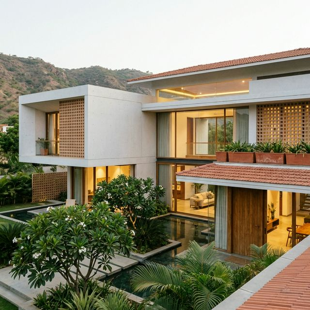

Indo-Western Minimalist
A perfect harmony of less is more. The Indo-Western Minimalist style strips away excess while retaining cultural warmth. It features the sleek, clean lines of modern architecture subtly enhanced with traditional jali (lattice) work, terracotta accents, and natural stone textures to create a serene, uncluttered living environment.
